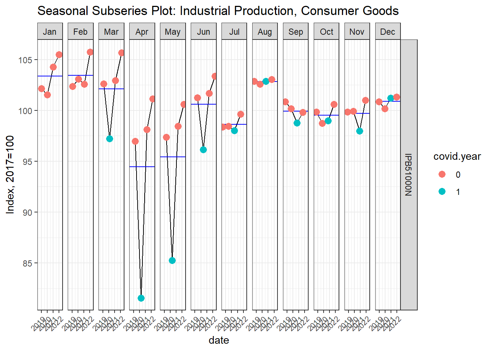
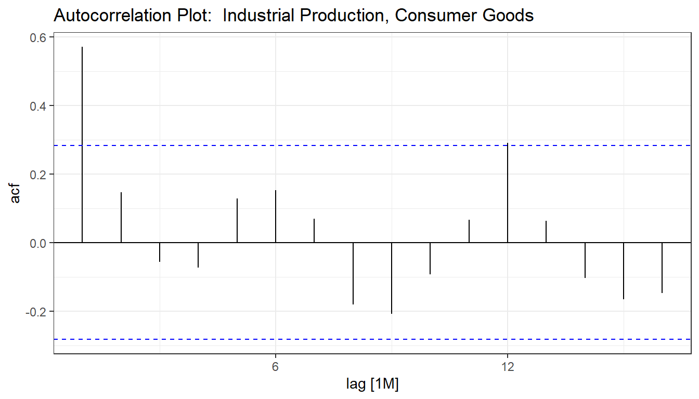

Code
knitr::opts_chunk$set(
echo = TRUE,
message = FALSE,
warning = FALSE
)
library(tidyverse)
library(fpp3)
library(fredr)
theme_set(theme_bw())
if(basename(getwd()) != "Week 1") setwd(file.path(getwd(), "Assignments", "Week 1"))knitr::opts_chunk$set(
echo = TRUE,
message = FALSE,
warning = FALSE
)
library(tidyverse)
library(fpp3)
library(fredr)
theme_set(theme_bw())
if(basename(getwd()) != "Week 1") setwd(file.path(getwd(), "Assignments", "Week 1"))The series that will be examined today is the non-seasonally-adjusted Industrial Production Consumer Goods Index. This data comes from the Federal Reserve of St. Louis.
data <- fredr("IPB51000N") %>%
mutate(
covid.start = factor(ifelse(date == ymd("2020-03-01"), 1, 0)),
covid.year = factor(ifelse(year(date) == 2020 & date >= ymd("2020-03-01"), 1, 0)),
date = yearmonth(date)
) %>%
tsibble(index = date, key = series_id)The test dataset are the 12 most recent observations while the training set are the 48 most recent prior to that.
test <- data %>%
slice_max(n = 12, order_by = date) %>%
arrange(series_id, date)
train <- data %>%
filter(date <= min(test$date)) %>%
slice_max(n = 48, order_by = row_number()) %>%
arrange(series_id, date)Industrial Production was severely impacted by the COVID-19 pandemic.
train %>%
autoplot(value) +
theme_bw() +
ggtitle("Industrial Production, Consumer Goods") +
ylab("Index, 2017=100")
COVID-19 caused the seasonality to differ in 2020, though it appears mostly typical once again in 2021.
train %>%
gg_season(value, labels = "both", linewidth = .75) +
theme_bw() +
ggtitle("Seasonal Plot: Industrial Production, Consumer Goods") +
ylab("Index, 2017=100")
train %>%
gg_subseries(value) +
theme_bw() +
geom_point(
aes(color = covid.year),
size = 3
) +
ggtitle("Seasonal Subseries Plot: Industrial Production, Consumer Goods") +
ylab("Index, 2017=100") +
theme(
axis.text.x = element_text(angle = 45, hjust = 1, size = 8)
)
train %>%
gg_lag(value, geom = "point", lags = 1:12, size = 2) +
theme_bw() +
ggtitle("Lag Plot: Industrial Production, Consumer Goods") +
ylab("Index, 2017=100")
train %>%
ACF(value) %>%
autoplot() +
theme_bw() +
ggtitle("Autocorrelation Plot: Industrial Production, Consumer Goods")
lambda = 0
train %>%
model(
STL(box_cox(value, lambda) ~ trend(window = 21) + season(window = "periodic"), robust = TRUE)
) %>%
components() %>%
autoplot() +
theme_bw() fit <- train %>%
model(
"naive" = NAIVE(value),
"snaive" = SNAIVE(value ~ lag("year")),
"trend" = RW(value ~ drift()),
"ets_add" = ETS(value ~ error("A") + trend("A") + season("A"))
# "ets_mult" = ETS(value ~ error("M") + trend("A") + season("M")),
# "ets_add_bc" = ETS(box_cox(value, lambda) ~ error("A") + trend("A") + season("A")),
# "ets_mult_bc" = ETS(box_cox(value, lambda) ~ error("M") + trend("A") + season("M")),
) fx <- fit %>%
forecast(new_data = test)
fx %>% autoplot(
data %>% filter(year(date) >= 2021),
level = NULL,
linewidth = .75
) +
theme_bw() +
ggtitle("Forecasts for Industrial Production, Consumer Goods")Contrary to expectations, the Naive model outperforms the other models based on the RMSE, MAE, and MAPE metrics. Some skepticism is required before this method is adopted. The biggest problem is that the Naive forecast will differ vastly depending on what month the training data ends. If the training set had ended in April, when the seasonality of the index is at it’s lowest point, a naive forecast will underestimate the value for nearly all test set observations. Because the training set ended in June 2022 which is an average point of the year, it produced a decent forecast. The trend model, which is the second best according to the metrics, faces similar concerns.
accuracy(fx, test, measures = list(RMSE = RMSE, MSE = MSE, MAPE = MAPE))# A tibble: 4 × 6
.model series_id .type RMSE MSE MAPE
<chr> <chr> <chr> <dbl> <dbl> <dbl>
1 ets_add IPB51000N Test 3.37 11.4 2.76
2 naive IPB51000N Test 1.63 2.67 1.40
3 snaive IPB51000N Test 2.46 6.05 2.01
4 trend IPB51000N Test 2.03 4.11 1.56A better metric to gauge the forecast would be the Continuous Ranked Probability Score, since that considers the entire probability distribution rather than just the point estimate. This metric finds the Seasonal Naive model to be a better and ranks the Naive and Trend models to be the two worst models.
accuracy(fx, test, measures = list(CRPS = CRPS))# A tibble: 4 × 4
.model series_id .type CRPS
<chr> <chr> <chr> <dbl>
1 ets_add IPB51000N Test 2.19
2 naive IPB51000N Test 2.32
3 snaive IPB51000N Test 1.68
4 trend IPB51000N Test 2.55At first glance, it is surprising that the ETS model was outperformed by such a simple model. Much of this is due to exogenous factors in the macroeconomy. Coming out of COVID, the economy began to overheat as evidenced by rising inflation. The Federal Reserve in turn began raising interest rates to cool the economy. The training set we used ended in June 2022 as inflation rates were still increasing and the Industrial Production Consumer Goods index was increasing at a rapid rate. But the interest rates have been cooling the economy over the past year which has dampened industrial production. The ETS model assumes a constant trend and maintains this higher rate of growth, producing a bad forecast. The Seasonal Naive model simply takes the prior years’ value, which removes any trend and happens to produce a better forecast in this instance.
A better approach to determine which forecast model works best would be to evaluate the forecast over multiple time periods using cross validation.
# Create CV dataset
train.cv <- train %>%
# filter(year(date) < 2022) %>%
stretch_tsibble(.init = 24, .step = 1)
# Number of groups
max(train.cv$.id)[1] 25 # Fit models
fit.cv <- train.cv %>%
model(
"naive" = NAIVE(value),
"snaive" = SNAIVE(value ~ lag("year")),
"trend" = RW(value ~ drift()),
"ets_add" = ETS(value ~ error("A") + trend("A") + season("A"))
# "ets_mult" = ETS(value ~ error("M") + trend("A") + season("M")),
# "ets_add_bc" = ETS(box_cox(value, lambda) ~ error("A") + trend("A") + season("A")),
# "ets_mult_bc" = ETS(box_cox(value, lambda) ~ error("M") + trend("A") + season("M")),
) fit.cv %>%
accuracy() %>%
group_by(.model, .type) %>%
summarize(
across(c(RMSE, MAE, MAPE), \(x){mean(x, na.rm = T)})
)# A tibble: 4 × 5
# Groups: .model [4]
.model .type RMSE MAE MAPE
<chr> <chr> <dbl> <dbl> <dbl>
1 ets_add Training 2.88 1.88 1.99
2 naive Training 4.26 2.87 3.00
3 snaive Training 5.60 3.20 3.48
4 trend Training 4.26 2.85 2.98Cross validation demonstrates that, on average, the ETS model is much more predictive than the other models with a much lower RMSE, MAE, and MAPE. It also demonstrates the art of predictive analytics and the need for an understanding of the data being analyzed. A practiced forecaster may have understood the exogenous factors at work that could suppress future growth rates and applied a dampened ETS model which would have proved to be much more accurate.
train %>%
model(ETS(value ~ error("A") + trend("Ad") + season("A"))) %>%
forecast(new_data = test) %>%
autoplot(
data %>% filter(year(date) >= 2020),
linewidth = .75
)